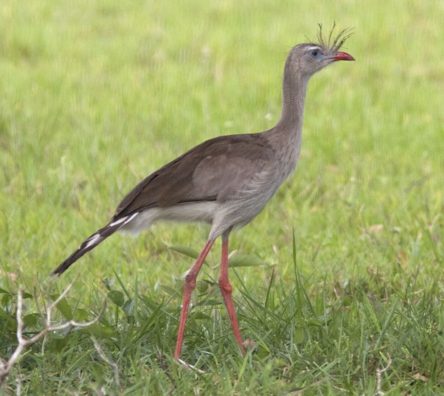
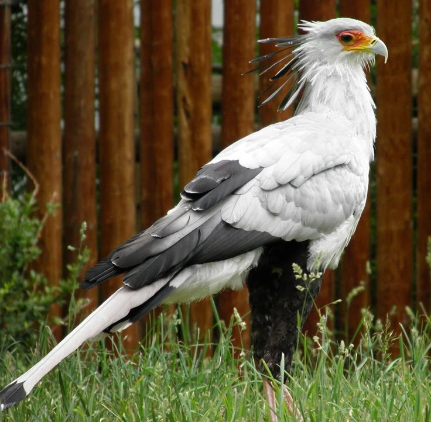
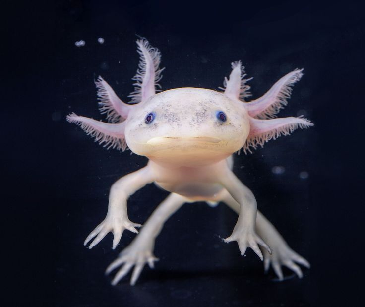
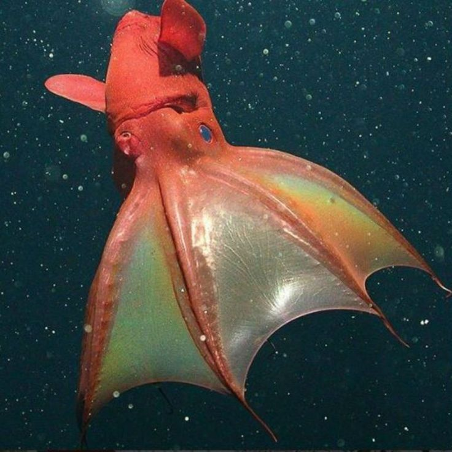
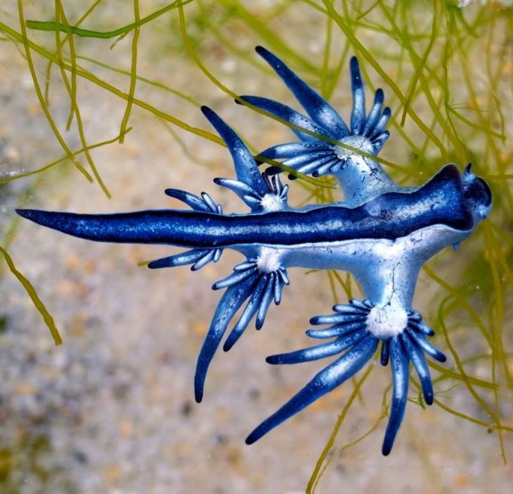
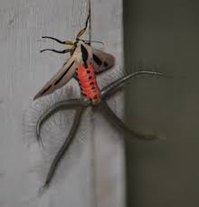

Animais exóticos
O planeta Terra é repleto de maravilhas, não só por sua beleza, mas também por suas diferenças. Nesse sentido, algumas espécies de animais são verdadeiras obras de arte, parecem até ter saído de um filme de ficção, aqui estão algumas destas espécies mágicas que habitam o nosso planeta.
SERIEMA
A seriema é uma ave nativa da América do Sul, encontrada principalmente no Brasil, Paraguai, Bolívia e Argentina. Seu corpo esguio, pernas longas e plumagem em tons de cinza e bege lhe conferem uma aparência quase mitológica. Ela pode medir até 90 cm de altura, com uma crista de penas desgrenhadas sobre a cabeça, que balança ao vento com a mesma altivez de um leque cerimonial. Seus olhos são atentos, o bico curvo e forte, e suas garras afiadas, pois apesar da aparência graciosa, a seriema é uma predadora habilidosa, famosa por matar cobras com golpes rápidos no chão.
AVE-SECRETÁRIA
A ave-secretária é uma criatura de presença rara e enigmática, nativa da África subsaariana. Com até 1,30 metro de altura, pernas longas como as de uma dançarina de flamenco e uma postura sempre ereta. Seu nome curioso vem das penas longas na nuca que lembram penas de escrever presas atrás da orelha, como se fosse uma escriba antiga. No entanto, por trás dessa aparência elegante e quase erudita, esconde-se uma caçadora impiedosa, especialista em matar cobras com chutes violentos. A precisão dos seus golpes é tão letal quanto fascinante. Diferente de outras aves de rapina, ela não caça pelo ar, mas no solo, andando com altivez e paciência.
AXOLOTE
O axolote, também chamado de “monstro da água”, é um tipo raro de salamandra nativa do México, especialmente dos lagos Xochimilco e Chalco. Mas ao contrário de seus parentes, ele nunca completa a metamorfose: permanece na fase larval por toda a vida. Tem um corpo alongado, brânquias externas em forma de plumas cor-de-rosa que se projetam como delicados galhos de coral dos lados da cabeça, e um semblante que mistura inocência e serenidade. Pode ter tons de preto, marrom, branco ou até rosa bebê. Mas o que realmente encanta? Ele regenera partes do corpo com perfeição, incluindo membros, cauda, órgãos, e até pedaços do coração e do cérebro.
LULA-VAMPIRA-DO-INFERNO
A lula-vampira-do-inferno é uma criatura abissal que vive nas profundezas escuras dos oceanos, entre 600 e 900 metros abaixo da superfície, numa região chamada zona de penumbra, onde a luz solar não alcança. Apesar do nome dramático, ela não é uma lula, nem um polvo, mas sim um ser ancestral que compartilha características dos dois. Seu corpo gelatinoso tem tons de vermelho escuro ou preto, com olhos grandes azulados, os maiores olhos proporcionais ao corpo de qualquer animal do planeta. Seus tentáculos são unidos por uma membrana que lembra uma capa de vampiro, e em vez de tinta, ela solta uma nuvem de muco luminoso com partículas bioluminescentes para confundir predadores.Ela tem cerca de 30 cm de comprimento, mas sua presença é imensa. Nada lentamente, como se flutuasse em uma dança etérea no abismo. Alimenta-se de detritos orgânicos e pequenos animais, o que a torna um símbolo da sobrevivência discreta, longe dos holofotes da luz solar.
DRAGÃO-AZUL
O dragão-azul é uma espécie de lesma-do-mar, sim, uma lesma, que flutua de barriga pra cima nos oceanos tropicais e subtropicais, como uma criatura encantada. Seu corpo tem tons vibrantes de azul metálico, prateado e cinza, com estruturas alongadas em forma de asas ou tentáculos que se espalham como raios. Ele mede no máximo 5 cm, mas sua presença é hipnotizante. Apesar da aparência etérea, o dragão-azul é um predador voraz. Ele se alimenta de organismos venenosos como a caravela-portuguesa, armazenando os nematocistos (células urticantes) da presa em seu próprio corpo, e reutilizando esse veneno pra se defender.
MARIPOSA COM TENTÁCULOS INFLÁVEIS
À primeira vista, ela parece apenas mais uma mariposa de asas elegantes, tons de branco, preto e vermelho. Mas ao se preparar para acasalar, revela seu grande segredo biológico: quatro órgãos infláveis que emergem como tentáculos negros e pulsantes de sua parte traseira. Esses apêndices, chamados de coremata, são cobertos por escamas finas e liberam feromônios intensos. Eles se agitam no ar como criaturas vivas, hipnotizando as fêmeas ao redor com uma dança química.O tamanho e a força desses tentáculos dependem da quantidade de ácido carmínico ingerido durante a fase de lagarta, ou seja, quanto melhor sua dieta, mais impressionante sua mutação amorosa.
